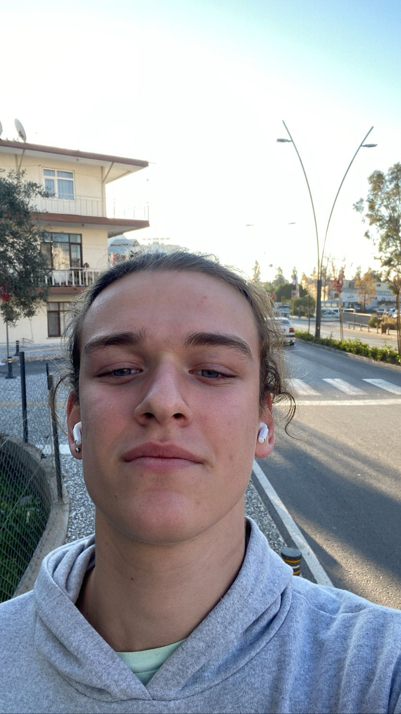

Hakkında
Ben kimim?
Ben Altan Bozkuş. 19 yaşındayım Türkiye'de yaşıyorum. Şu an önlisans öğrencisiyim, bilgisayar programcılığı bölümünde okuyorum. Kaliteli vakit geçirmeyi çok severim; özellikle gezmek, arkadaşlarımla vakit geçirmek, spor yapmak, bilgisayar ve yazılımla uğraşmayı çok seviyorum.
‘Geleceğimi yazılım üzerine adamak istiyorum’
Çok merak ettiğim bir alan tüm bu teknoloji ile gelen tüm yenilikler yazılım ve türleri sayesinde oluyor. Bu ilgi çekici alanla uğraşmaktan ilgilenmekten çok keyif alıyorum. Geleceğimde böyle bir mesleği yapmak için elimden gelen her şeyi yapıyorum. Yazılım süper bir alan.
Benim hakkımda düşündüklerinizi dileğiniz gibi yazabilirsiniz :))

Yorum Bırakın